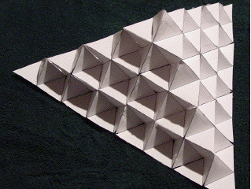
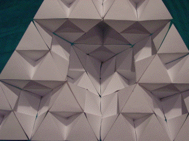

 
| Purpose |
| To construct a model of one face of the third stage of a Koch Tetrahedron and to find the dimension of a completed Koch Tetrahedron. |
| Materials |
| Eighteen copies of the template supplied with this lab (each template has two patterns to be cut out and works best if the template is copied to heavy paper, 24 lb. or more), scissors, clear tape. |
| Background |
| Procedure |
| Exercises |
| Conclusion Some recursive constructions can hide details in their interiors. Some of these details can affect the dimension of the whole shape. |